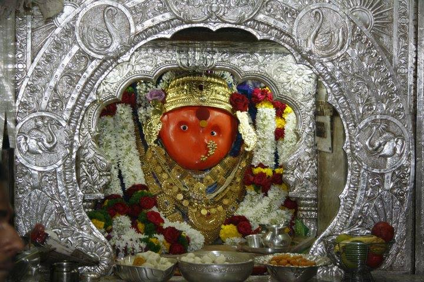
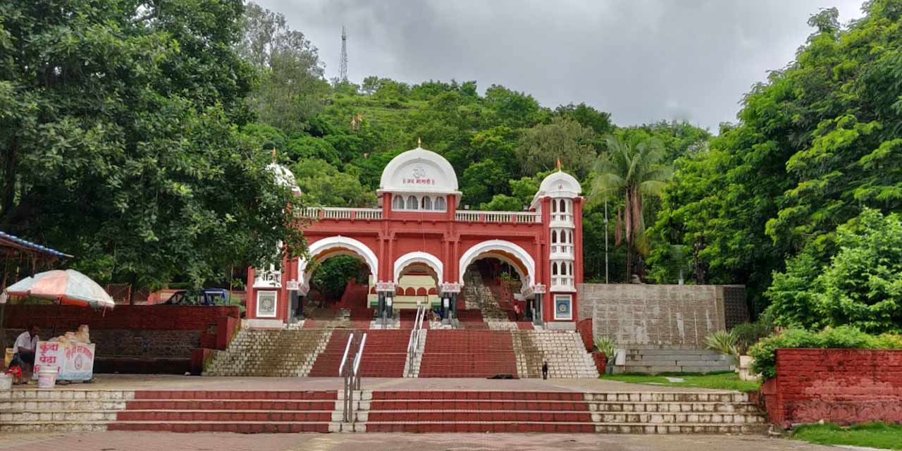
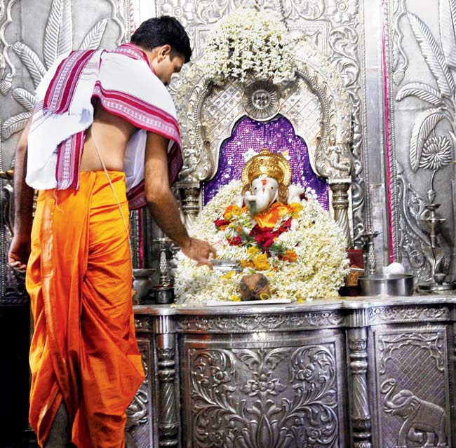
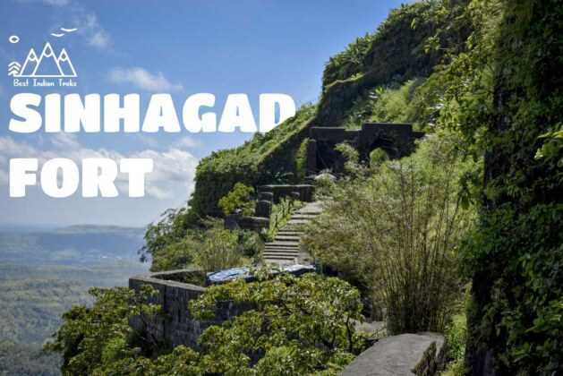
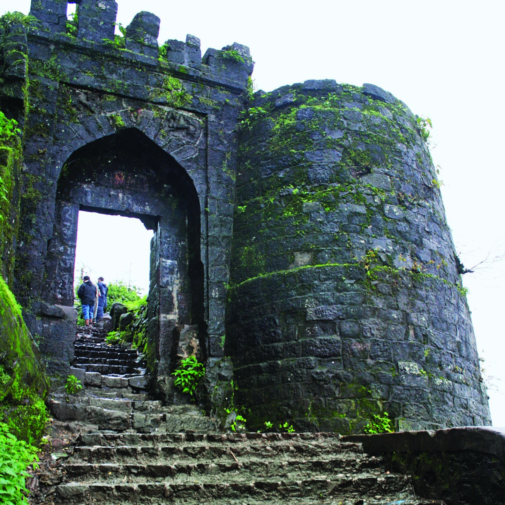
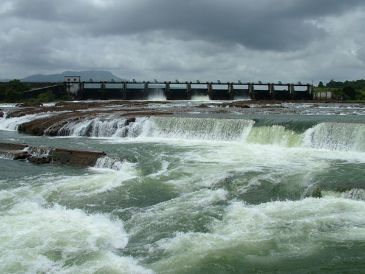
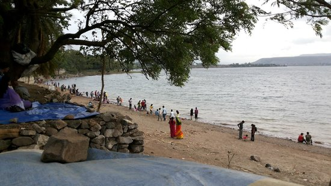

Dagdusheth Ganpati
The most iconic Ganesh temple in Pune. Known for its beautiful golden idol and huge celebrations during Ganeshotsav.
People call him a "Navasacha Ganpati" because the temple was originally built as an act of faith during a time of great suffering (the plague). To "complete all Navas" implies that the deity is so powerful that no sincere prayer goes unanswered.
Origin (1893): Built by sweet-maker Dagdusheth Halwai and his wife Lakshmibai after losing their son to the plague.
Historical Role: It was the birthplace of the Public Ganeshotsav movement, started by Lokmanya Tilak to unite Indians against British rule.
The Deity: Features a massive 7.5-foot Ganesha idol adorned with nearly 40kg of gold.
Charity: The temple trust is famous for its massive social work, running hospitals, old age
2.Parvati Hill
Parvati Hill is one of the most scenic and significant historical locations in Pune, standing 2,100 feet above sea level. It was developed primarily during the era of the Peshwas and remains a vital spiritual and recreational hub for the city.
The climb involves approximately 103 wide stone steps, leading you to a complex of temples and a panoramic viewpoint that offers a 360-degree look at the Pune skyline.
Peshwa Heritage: The main Parvati Temple was completed in 1749 by Nana Saheb Peshwa. It serves as a memorial to the Peshwa dynasty, and the hill also houses the Peshwa Museum, which displays artifacts, weapons, and coins from that era.
Diverse Shrines: While the Devdeveshwar temple (Lord Shiva) is the most prominent, the hill also features temples dedicated to Lord Vishnu, Kartikeya, and Vitthal-Rukmini.
The "Sunset Point": It is widely considered the best place in the city to watch the sunrise or sunset, as the elevation provides a clear view of the surrounding hills and urban landscape.
Historical Tragedy: Legend says that Balaji Baji Rao (Nana Saheb) watched the defeat of his army at the Third Battle of Panipat from this hill, and he eventually passed away here shortly after.
3.Chaturshringi Temple
The Chaturshringi Temple is a hillside shrine on Senapati Bapat Road dedicated to the Goddess Chaturshringi (the presiding deity of Pune)
The Name: "Chaturshringi" means a mountain with four peaks, representing the Goddess's power.
The Climb: You need to climb about 100 to 170 stone steps to reach the main temple.
Navratri Hub: It is the most popular place in Pune during the Navratri festival, hosting a massive fair and beautiful illuminations.
The Experience: Offers a peaceful, breezy atmosphere with a great view of the city from the top.
Location: Very close to Pune University and the JW Marriott, making it easy to access.
.



4. Saras Baug
saras baug is a major landmark in Pune, known for its historic temple set within a scenic park that was once a lake.
Talyatla Ganpati: The central attraction is the 18th-century "Talyatla Ganpati" (Ganpati in the lake) temple, which originally stood in the middle of a lake created by the Peshwas.
Greenery and Recreation: Today, the dried lakebed has been converted into 25 acres of lush gardens, making it a popular spot for morning walks and family outings.
Museum: The temple premises house a small museum featuring a unique collection of over 100 Ganesha idols from different parts of the world.
Chowpatty Vibes: The area outside the park is famous for its street food stalls, often called Pune’s own "mini Chowpatty," serving popular snacks like pav bhaji and bhel puri


Sinhagad Fort
located about 25 km from Pune, is a legendary hill fortress that has witnessed some of the most pivotal battles in Maratha history. Perched on a cliff of the Bhuleshwar range, it is a favorite for both history enthusiasts and nature lovers.
The Battle of Sinhagad: The fort is most famous for the 1670 battle where Tanaji Malusare, a general for Chhatrapati Shivaji Maharaj, recaptured it from the Mughals. Though the Marathas won, Tanaji lost his life, leading Shivaji Maharaj to famously remark, "Gad ala, pan sinha gela" (The fort is won, but the lion is gone).
Tanaji Malusare Memorial: Visitors can see the memorial dedicated to the brave general, alongside the samadhi (tomb) of Rajaram Raje Bhosle, Shivaji Maharaj's son.
Local Culinary Experience: A visit is incomplete without trying the traditional Maharashtrian food served by local villagers at the top, specifically the famous Pithla Bhakri (chickpea flour curry and millet bread) and Thecha (spicy chili condiment), often followed by fresh curd in earthen pots.
Trekking and Views: It is a popular trekking destination; the climb offers stunning panoramic views of the Sahyadri mountains and the Khadakwasla Dam below, especially during the monsoon when the area is covered in mist and greenery.



2.Shaniwar Wada
Shaniwar Wada is the most iconic historical landmark in Pune, serving as the majestic seat of the Peshwas of the Maratha Empire until 1818. Though a massive fire in 1828 destroyed much of its wooden interior, the imposing stone walls and fortifications remain a symbol of Maratha pride and architectural ingenuity.
The Delhi Darwaza: The main entrance is famous for its massive iron spikes, designed to protect the palace from elephant-led charges.
The Ruins and Gardens: While the palace buildings are gone, the stone foundations offer a clear layout of the original structure, surrounded by well-maintained lawns.
Light and Sound Show: An evening show narrates the history of the Peshwas, bringing the ruins to life with stories of bravery and tragedy.
The Legend of Narayan Rao: The site is famously associated with the ghost of the young Peshwa Narayan Rao, whose spirit is said to haunt the grounds on full moon nights..
3.Khadakwasla Dam
Khadakwasla Dam is the primary source of water for Pune and one of the city's most popular weekend getaway spots.
🌊 In Short:
The Lifeline: It is the main dam that supplies drinking water to almost the entire city of Pune.
The Location: Situated about 20 km from the city center, right at the base of the road leading to Sinhagad Fort.
"Pune’s Sea": Because of its vast expanse of water, locals often visit the "Chowpatty" (lakefront) to enjoy the breeze and the view, especially during the monsoon.
Street Food: The promenade is famous for its snacks, particularly hot corn-on-the-cob (bhutta), bhel puri, and bhajiyas.
Defense Connection: The prestigious National Defence Academy (NDA) is located right next to the dam, and you can often see military activities or the beautiful Peacock Bay from certain points..



1.Shri Krishna Bhuvan
Shri Krishna Bhuvan (often called Shri Krishna Bhavan) is another "temple" for misal lovers in Pune, located in the busy lanes of Tulshibaug. Since 1941, it has maintained a very specific, traditional style that sets it apart from the others.
🍜 Why it’s Unique:
The "Pohe-Bhaji" Base: Unlike many misals that use sprouts (matki), Shri Krishna’s version uses a base of Yellow Poha and Potato Bhaji.
Bread over Pav: Following old-school Puneri tradition, they serve sliced white bread (often wood-fired) instead of the standard ladi pav.
The "Sample" (Gravy): Their tarri is famous for being a perfect balance—spicy, slightly tangy from tomatoes, and rich with grated coconut. It's flavorful without being "blow-your-socks-off" spicy.
Signature Onion Bhajji: Their Kanda Bhajji (onion pakodas) are legendary; they even invented the "half-plate" concept so you can enjoy them alongside your misal.
📍 Key Details:
Location: 1164, Budhwar Peth (near Tulshibaug/Moti Chowk). It’s tucked away, so you might need to ask locals once you're in the market.
Timings: Usually open from 7:30 AM to 4:00 PM. They often shut down once they run out of stock, so go early!
Vibe: It’s a no-frills, old-world eatery. You might have to share a table with strangers, and there’s usually a queue on weekends.
Monday Holiday: Like many Tulshibaug area shops, they are typically closed on Mondays.
2. Bedekar Misal
Bedekar Misal is a legendary culinary institution in Pune, specifically located in the Narayan Peth area. Established in 1948, it is one of the most famous spots to experience authentic Puneri Misal.
Signature Taste: Their misal is known for being mildly spicy with a hint of sweetness, served with a unique sliced bread (slice pav) rather than the traditional small buns.
The Experience: It is a no-frills, traditional establishment where you often have to stand in queues, especially on weekend mornings.
Additional Menu: While the misal is the star, they are also popular for their batata vada and refreshing solkadhi.
Legacy: It remains a favorite among locals who prefer the old-school Puneri flavor profile over the extra-spicy Kolhapuri versions found elsewhere.
3.Chitale Bandhu (Bakarwadi)
Chitale Bandhu is Pune’s most iconic snack and sweet brand, synonymous with the city's food culture.
Bakarwadi King: Famous globally for their Bakarwadi—a crunchy, spicy, and tangy savory snack that people often buy in bulk.
Dairy Heritage: Started as a dairy business in 1950; they are highly trusted for milk products like Shrikhand, Amrakhand, and fresh Paneer.
Mango Specialties: Their Amba Barfi (mango fudge) made from Alphonso mangoes is a seasonal bestseller.
Iconic Location: The main branch is on Bajirao Road, but they now have "Express" outlets all over the city.
Puneri Tradition: Buying a packet of Chitale Bakarwadi is considered a "mandatory" ritual for anyone visiting Pune.